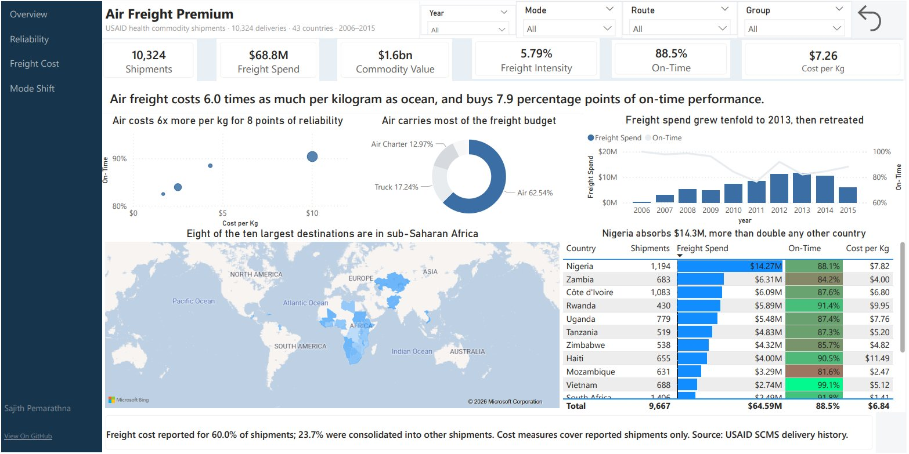
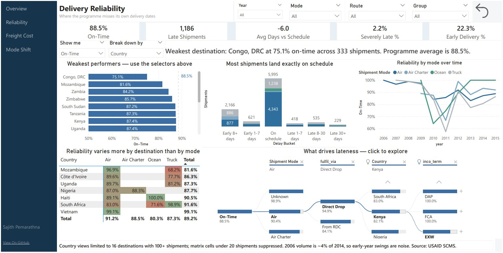
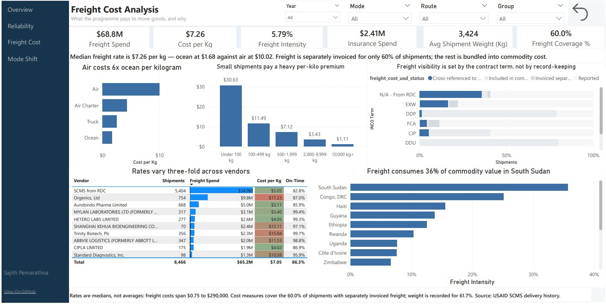
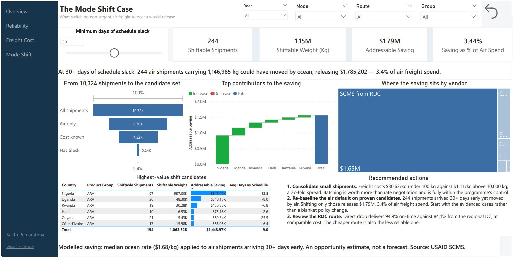

Air Freight Cost and Delivery Reliability
Power BI, DAX, Python, star schema modelling
A health commodity programme spends 62.5% of its freight budget on air, plus another 13% on air charter. How much of that premium actually buys faster, more reliable delivery?
Air costs six times as much per kilogram and buys 7.9 percentage points of on-time performance.
What are we paying for speed?
{kind=link}

The scatter carries the whole argument. Ocean sits bottom left, cheap and slightly less reliable. Air sits far right, expensive and only marginally better. Programme-wide on-time delivery is 88.5% at a median rate of $7.26 per kilogram, with freight running at 5.79% of commodity value. Spend is heavily concentrated: Nigeria alone absorbs $14.27M across 1,194 shipments, and eight of the ten largest destinations are in sub-Saharan Africa.
Where does reliability actually break?
{kind=link}

Destination matters more than mode. Modes span 80.3% to 91.2% on time, while destinations span 75.1% to above 94%. The sharper finding is routing: among air shipments, direct drop delivers 94.9% on time while the regional distribution centre route delivers 84.1%, at comparable cost per kilogram. That route handles 5,404 of the 10,324 shipments, so the cheaper option is also the less reliable one across more than half the programme.
Lateness is not the only failure. 1,186 shipments arrive late, but 2,166 arrive more than eight days early and 22.3% arrive more than a week early. Stock landing well ahead of need is warehouse cost, not service.
What drives what we pay?
{kind=link}

Small shipments pay a 27-fold premium. Under 100 kg costs $30.63 per kilogram, above 10,000 kg costs $1.11. Consolidation is worth more than any rate negotiation, and it sits entirely inside the programme's control. Vendor rates run from $4.02 to $17.23 per kilogram at comparable volumes, and rate does not predict reliability: one vendor delivers 99.4% on time at $5.40/kg while the RDC route delivers 82.8% at $5.05/kg.
Freight is separately invoiced on only 60% of shipments. That is not a record-keeping failure, it is contract structure. The INCO term decides whether freight is billed separately, bundled into commodity cost, or cross-referenced to another shipment.
What would changing it be worth?
{kind=link}

244 air shipments arrived more than 30 days ahead of schedule, so they were never time-critical. Moving them to ocean releases $1.79M, 3.4% of air freight spend, without touching a single delivery date that mattered. Nigeria accounts for $847K of the total and the RDC route for $1.65M of it. The funnel shows the narrowing rather than hiding it: 10,324 shipments, 6,760 by air or charter, 4,520 with both cost and weight recorded, 240 with 30 or more days of slack. A slider lets the reader change the slack threshold and watch the estimate resize.
- Consolidate small shipments.The 27-fold per-kilo spread between weight bands is the largest controllable cost lever in the data.
- Re-baseline the air default on proven candidates.Start with the 244 evidenced cases rather than a blanket policy change, so the saving is defensible shipment by shipment.
- Review the regional distribution centre route.Around eleven points of on-time performance at no cost saving, across more than half the programme's shipments.